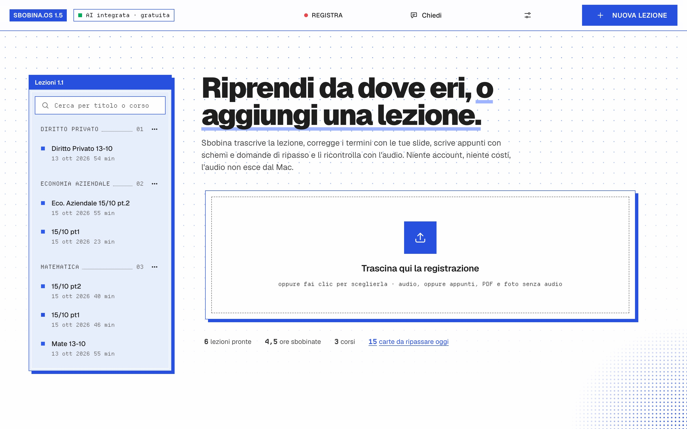
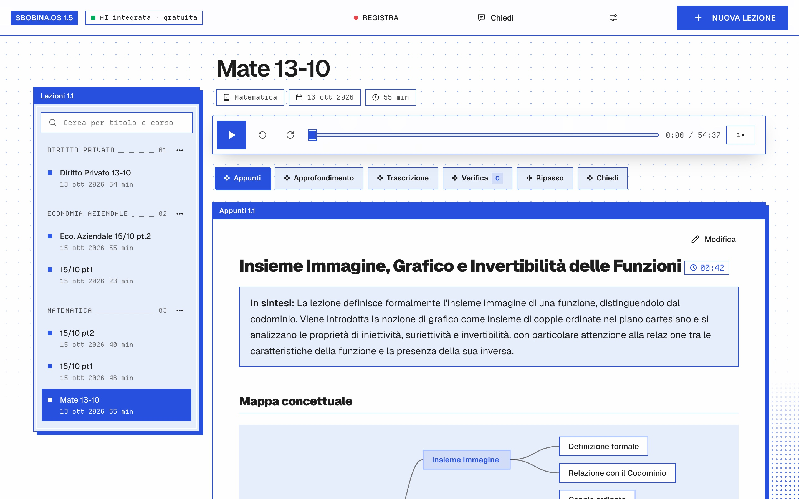
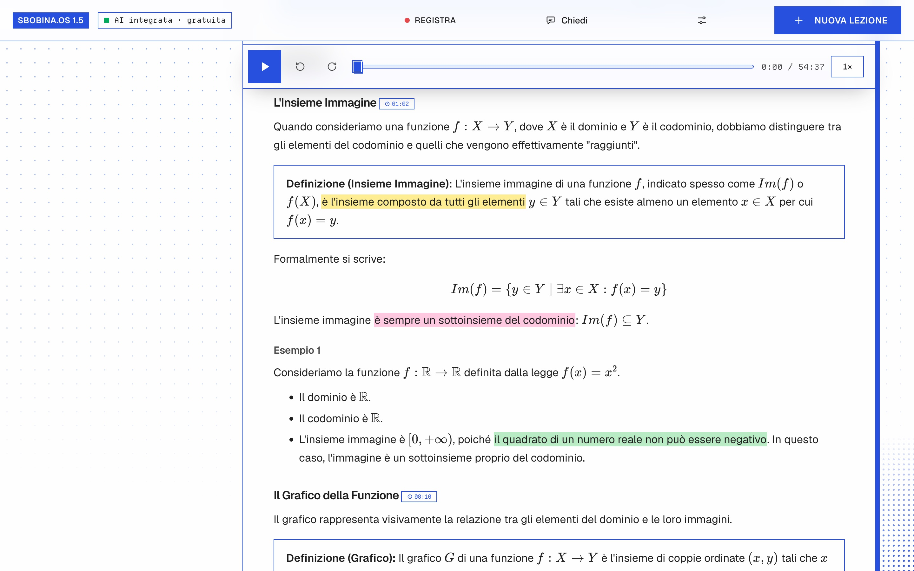
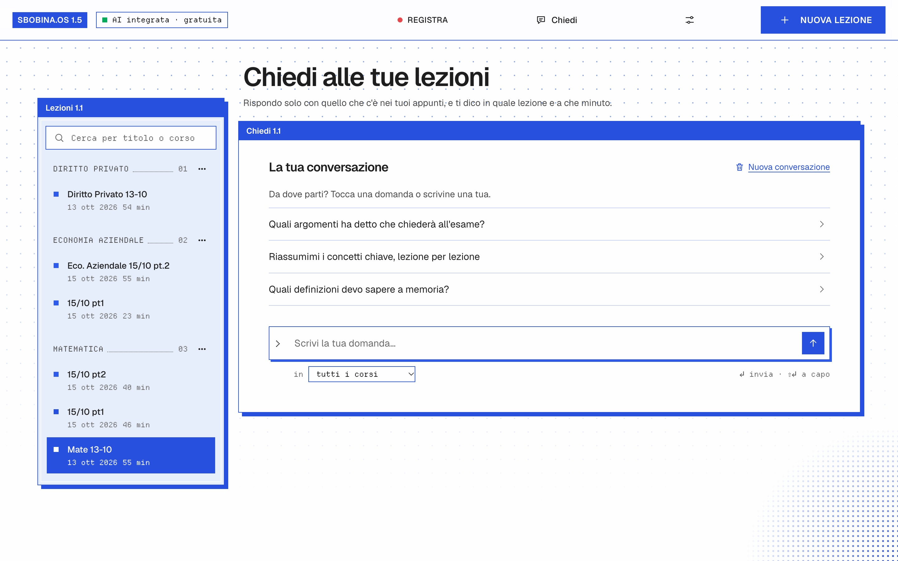
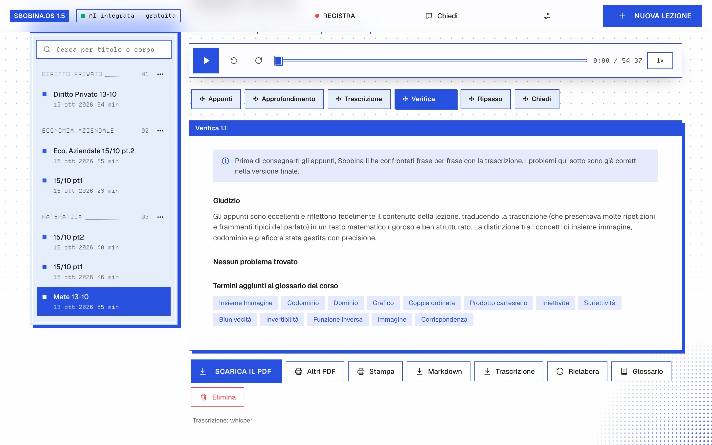
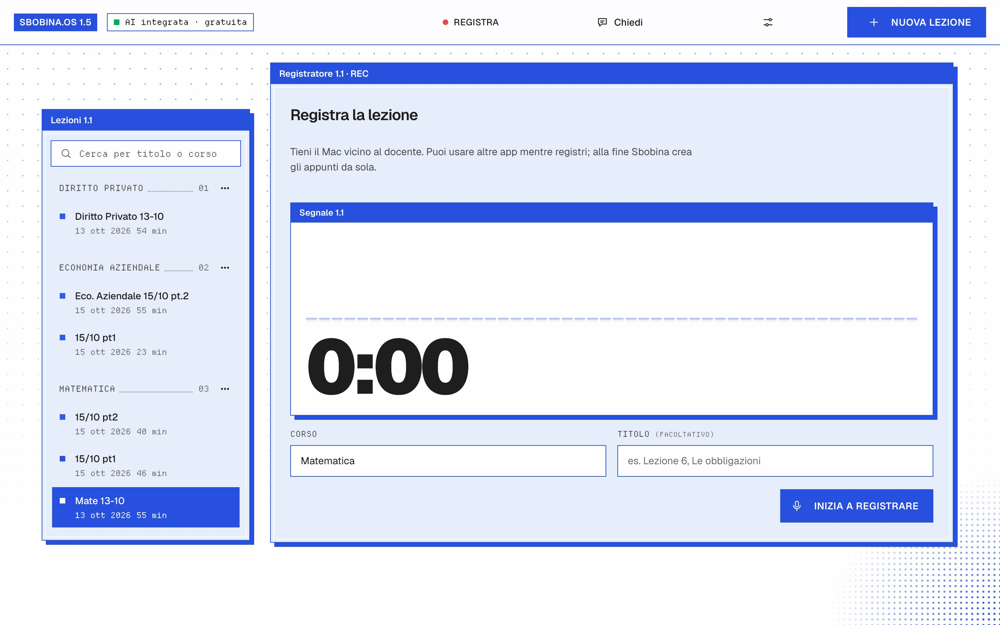
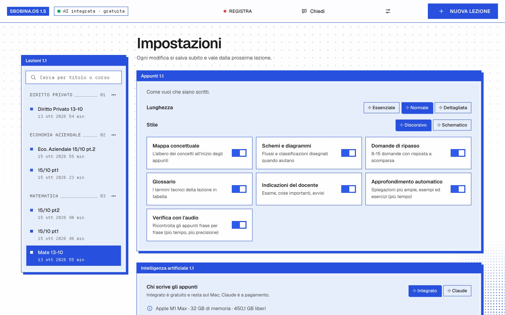
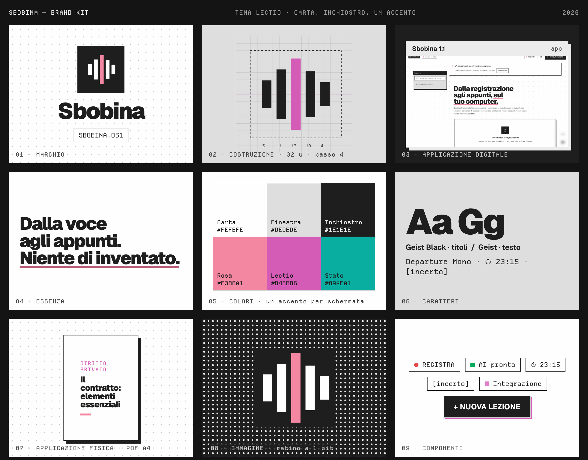

Appunti completi
Definizioni, teoremi con ipotesi e tesi, dimostrazioni ed esercizi con tutti i passaggi, esempi, formule in LaTeX, tabelle di confronto.
Per studenti universitari · in italiano e in inglese · gratis
Sbobina prende la registrazione della lezione (nota vocale del telefono, registratore, file di Teams o Zoom) oppure registra dal microfono, e la trasforma in appunti completi per studiare e preparare l'esame: trascrizione corretta, schemi, mappa concettuale, glossario, domande di ripasso e PDF da stampare. Tutto gira sul tuo Mac o PC: niente account, niente costi, l'audio non esce dal computer.

Dentro l'app
Schermate dell'app vera (versione 1.5), con sei lezioni del primo anno elaborate sul Mac.






01 · Cosa ottieni per ogni lezione
Ogni lezione diventa un fascicolo di studio. Ogni sezione si può accendere o spegnere nelle Impostazioni.
Definizioni, teoremi con ipotesi e tesi, dimostrazioni ed esercizi con tutti i passaggi, esempi, formule in LaTeX, tabelle di confronto.
Una mappa interattiva della lezione e schemi per flussi, processi e classificazioni.
Tutto ciò che il docente ha segnalato come importante o «da esame», raccolto in un posto solo.
I termini tecnici spiegati e domande di ripasso con la risposta nascosta.
Ogni passaggio porta il minuto della registrazione: un clic e riascolti. La trascrizione segue l'audio, a velocità da 1× a 2×.
La trascrizione corretta completa e un rapporto con i problemi trovati negli appunti e come sono stati sistemati.
Una spiegazione più ampia con esempi, esercizi svolti e domande d'esame. Puoi chiedere di approfondire ancora un punto.
Copertina con corso, data e durata. Solo appunti, con approfondimento o con trascrizione. Un PDF di tutto il corso con indice.
Markdown, una cartella per Obsidian (una nota per lezione, con collegamenti) e le flashcard per Anki.
02 · Come funziona
Un'app che «registra e scrive» fa una trascrizione e un riassunto. Sbobina controlla il lavoro più volte: ogni passaggio esiste per togliere un tipo di errore.
ffmpeg converte qualsiasi formato (m4a, mp3, wav, video…), toglie rimbombi e ronzii sotto la voce e alza le parti in cui il docente si allontana dal microfono, senza saturare le altre.
→ FLAC mono 16 kHz, uguale per tutti i motoriSe carichi slide, dispense o foto della lavagna, Sbobina ne estrae termini tecnici, nomi e sigle e li passa al riconoscimento vocale, che così li scrive giusti. Il glossario del corso cresce da solo, lezione dopo lezione.
→ glossario del corso, modificabile dall'appWhisper large-v3-turbo, in locale e gratis. Chi vuole la massima accuratezza può aggiungere AssemblyAI ed ElevenLabs: con due motori l'audio viene trascritto due volte in modo indipendente.
→ parole con il loro minuto esattoL'AI corregge la trascrizione blocco per blocco (termini, nomi, formule dettate a voce, punteggiatura) usando glossario e materiali. Se i due motori non sono d'accordo sceglie la versione giusta. Non riassume e non aggiunge: i punti dubbi restano segnati come [incerto].
Scritti dalla trascrizione revisionata e dalle slide. Ciò che non è stato detto a lezione può comparire solo in un riquadro Integrazione, ben distinto dal resto.
→ appunti, mappa, schemi, glossario, domandeUna seconda lettura confronta gli appunti con la trascrizione frase per frase: affermazioni non supportate, formule o ipotesi sbagliate, contenuti omessi, schemi errati. Una terza applica le correzioni.
→ rapporto di verificaSpiega l'argomento oltre la lezione. Quello che il docente non ha detto sta nei riquadri Integrazione, i dettagli incerti sono segnati [da verificare].
Su un Mac con chip M una lezione di un'ora richiede indicativamente da mezz'ora a un'ora tra trascrizione e scrittura. Sbobina mostra cosa sta facendo in diretta («dietro le quinte») con una stima del tempo. Puoi fermare e riprendere: riparte dall'ultimo blocco salvato.
Carica più registrazioni insieme: vanno in coda e vengono elaborate una alla volta. A fine lezione arriva una notifica, con il suono se lo vuoi.
03 · Per studiare
Carte create dalla lezione e ripasso a scatole: quelle che sbagli tornano più spesso. Esportabili per Anki.
Domande a scelta multipla con la spiegazione di ogni risposta.
Fai una domanda a una lezione o a tutte insieme, anche filtrando per corso: la risposta usa solo i tuoi appunti e dice da quale lezione e da che minuto viene.
Seleziona una frase e scegli il colore. Le evidenziazioni restano finché l'app è aperta e non finiscono nel PDF.
Cerca nel testo di tutte le lezioni di tutti i corsi.
Correggi o completa gli appunti a mano: le tue modifiche restano.
Registra dal microfono, con il livello dell'audio in tempo reale. Il widget resta sopra le altre finestre, va in pausa e si chiude nella barra dei menu; con Stop salva la registrazione e gli appunti li crei quando vuoi.
Niente registrazione? Sbobina crea gli appunti anche da soli appunti, PDF (pure scansionati) o foto della lavagna.
Interfaccia, appunti, PDF e trascrizione anche in inglese, per i corsi tenuti in inglese.
04 · Gira sul tuo computer
Stesso codice, stessa interfaccia, stesse funzioni. Cambia solo il motore che fa girare l'AI sulla scheda video. Al primo avvio una procedura guidata guarda il computer, propone il modello adatto e scarica tutto una volta sola, con una barra di avanzamento.
| Mac (Apple Silicon) | PC Windows (NVIDIA) | |
|---|---|---|
| Trascrizione | Whisper con MLX sulla GPU del Mac | Whisper con faster-whisper su CUDA; se CUDA manca, sul processore |
| Appunti | Gemma 4 (MLX) dentro Sbobina | Gemma 4 (GGUF) con llama.cpp, scaricato da Sbobina |
| Modello consigliato | In base alla memoria: dal Leggero (8 GB) al Massima qualità (32 GB) | In base alla memoria della scheda video: con 8 GB l'Equilibrato |
| Foto e slide | Riconoscimento del testo di macOS | Riconoscimento del testo di Windows |
| Chrome, Chromium, Edge o Brave | Edge (già presente in Windows) | |
| Dati | ~/Library/Application Support/Sbobina | %LOCALAPPDATA%\Sbobina |
Con le impostazioni normali niente esce dal computer: audio, trascrizioni e appunti restano nella cartella dati. Solo se aggiungi tu la chiave di un servizio cloud l'audio o il testo vengono inviati a quel servizio.
Gratis: nessun account, nessun abbonamento, nessun costo a lezione. Il prezzo è il tempo. Claude, AssemblyAI ed ElevenLabs sono facoltativi e a pagamento; con Claude l'app mostra il costo stimato di ogni lezione.
05 · Scarica
Mac con chip Apple (M1 o successivi), macOS 12 o più recente. Apri il .dmg e trascina Sbobina in Applicazioni.
Scarica per MacWindows 10 o 11, consigliata una scheda NVIDIA. Estrai lo zip e fai doppio clic su Installa Sbobina.bat. Per ora è la versione 1.2: le novità più recenti arrivano più avanti.
Scarica per WindowsAl primo avvio su Mac: tasto destro sull'app → Apri, perché l'app non è ancora firmata da Apple. Tutte le versioni sono nella pagina Releases di GitHub.
# Python 3.10+ e ffmpeg, poi: git clone https://github.com/swumpyyy/sbobina.git cd sbobina python3 -m venv .venv source .venv/bin/activate pip install -e ".[locale,app]" ./scripts/crea_app_macos.sh
Crea Sbobina.app. Con --dmg crea un'app autonoma da dare ai compagni di corso.
git clone https://github.com/swumpyyy/sbobina.git
cd sbobina
powershell -ExecutionPolicy Bypass `
-File scripts\installa_windows.ps1
Installa Python 3.12, i pacchetti e ffmpeg e mette Sbobina sul Desktop. Serve un driver NVIDIA recente.
Siediti nelle prime file o appoggia il telefono vicino alla cattedra, con il microfono verso il docente. Modalità aereo durante la registrazione. Un file per lezione. Carica le slide: è il modo più efficace per avere termini, formule e nomi corretti.
06 · Brand kit
Il marchio è la voce che diventa testo: cinque barre d'onda in un quadrato d'inchiostro, quella centrale in blu elettrico, come la frase che il docente dice «da esame». Tutto a 1 bit, come la carta su cui finiscono gli appunti.
